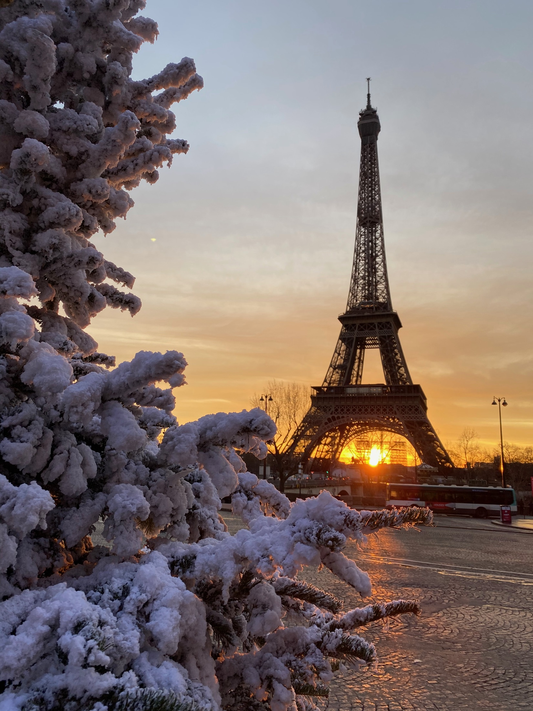
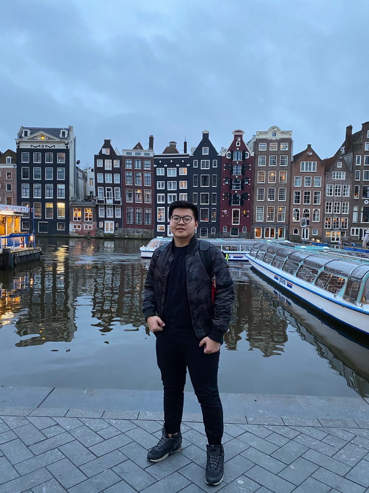
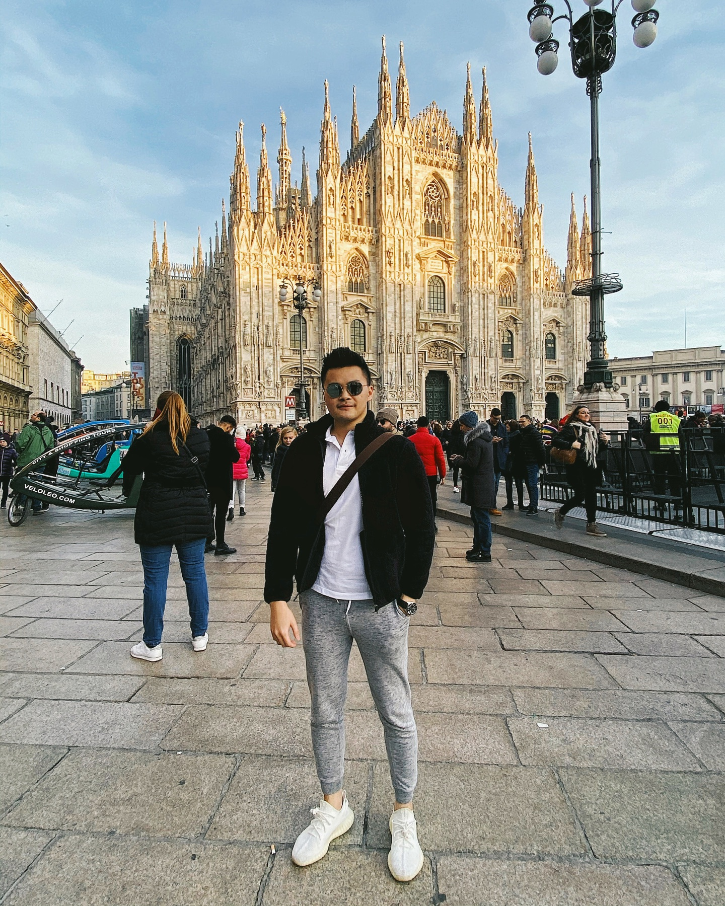
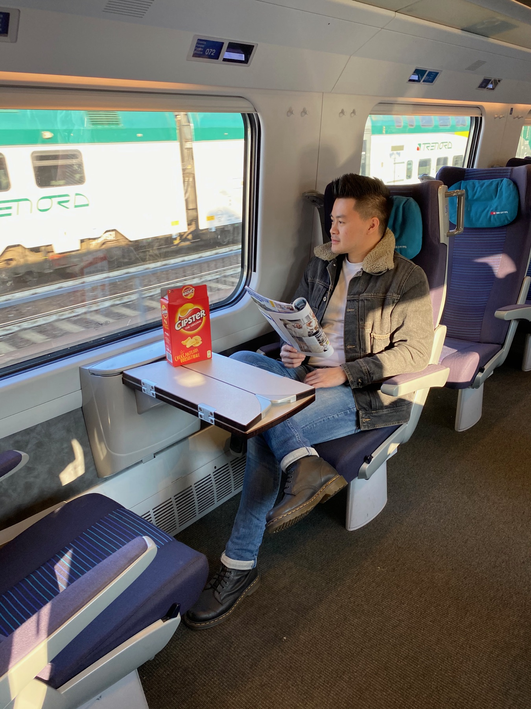
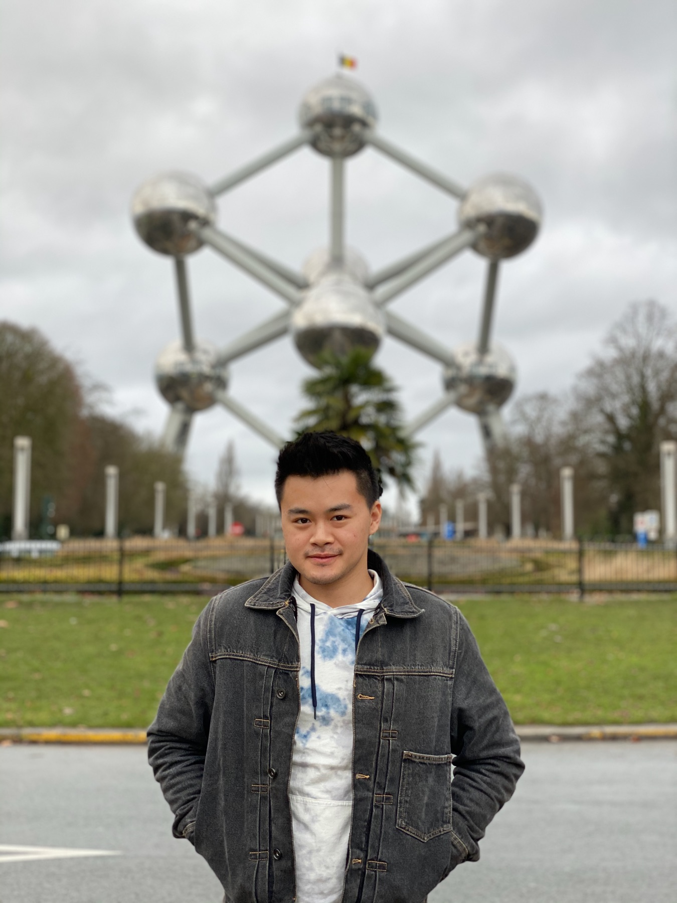

Switzerland and Paris carried the memory
Switzerland gave the route its winter beauty and outdoor moments. Paris gave the trip a softer final chapter, with food and city light that felt easier to settle into.
Europe / 31 Dec 2019 - 12 Jan 2020
A fast winter route from Milan into Switzerland, through Germany, Amsterdam and Brussels, ending in Paris, with the strongest memories in Switzerland and Paris.
This was a beautiful route, but also a lesson in pace. Moving between cities every one or two nights made the trip feel full, expensive, and sometimes tiring, especially with road time, trains, and luggage.

This trip was not just about Europe in winter. It was about learning how much movement a trip can hold before the beauty starts competing with the luggage.
The route moved from Jakarta to Milan, then through Zurich, Lucerne, Interlaken, Montreux, Bern, Frankfurt, Koln, Amsterdam, Brussels, and Paris before returning home.
The two chapters that still stand above the rest are Switzerland and Paris. Switzerland was extra expensive, but the winter beauty made it feel worth it. Paris softened the ending with city light, macarons, and one proper lunch memory at Kong.
Switzerland gave the route its winter beauty and outdoor moments. Paris gave the trip a softer final chapter, with food and city light that felt easier to settle into.
The route worked as a first Europe winter sweep, but I would slow it down next time and let fewer cities breathe properly.
Trip Chapters
This draft keeps Europe simple: two full chapters for the places with the strongest memory and a route sampler for the rest.
01 / Switzerland
Montreux sky, Beatenberg sledding, clear-water memories, mountain roads, and the lesson that Switzerland is expensive for a reason.
Start Switzerland
02 / ParisEiffel winter light, Pierre Herme macarons, Kong for lunch, and the city that helped the route slow down at the end.
Start Paris
03 / Route samplerUseful route texture from Milan, Germany, Amsterdam, and Brussels without forcing every stop into a full page yet.
Jump to route samplerThe kind of sky that becomes the emotional shortcut for the whole trip.
A specific Swiss memory I want to support with a confirmed full-resolution image later.
A simple winter activity that made the Swiss chapter feel less like sightseeing and more like being inside the season.
The kind of rental surprise that makes a road-trip story instantly better.
Route Sampler
The route covered more than Switzerland and Paris, but those middle cities need more context before becoming full NutNibbles chapters. For now, they work best as a visual note on how fast the trip moved.


